4.ファームウェアの設定
メニューの言語が日本語の場合もありますが、大体英語のカタカナ表記になっています。
※キーボードのカーソルキー(矢印)とEnterキー(決定)、ESCキー(戻る)でも操作できます。
※機種により表記や色が異なる事があります。
Advanced(詳細モード) を選択し、最上段のAdvanced(詳細) からメニュー 一番上の
AMD fTPM Config～メニューに入ります。TPM Device Selection を選ぶと
選択肢が表示されるので、Firmware TPM(有効) にします。


5.仮想化機能の設定
メニュー上段の ←を選択し 前画面へ、上から二段目のCPU Config～メニューへ入ります。
中段にある SVM Mode を選択すると、選択肢が出るので Enabled(有効)にします。
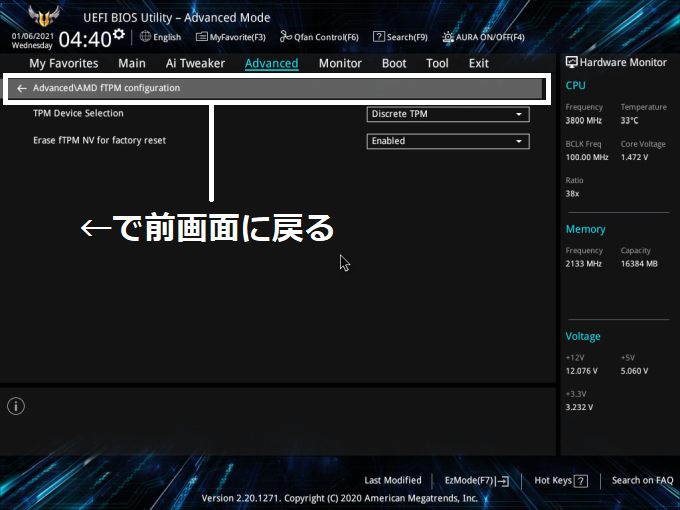 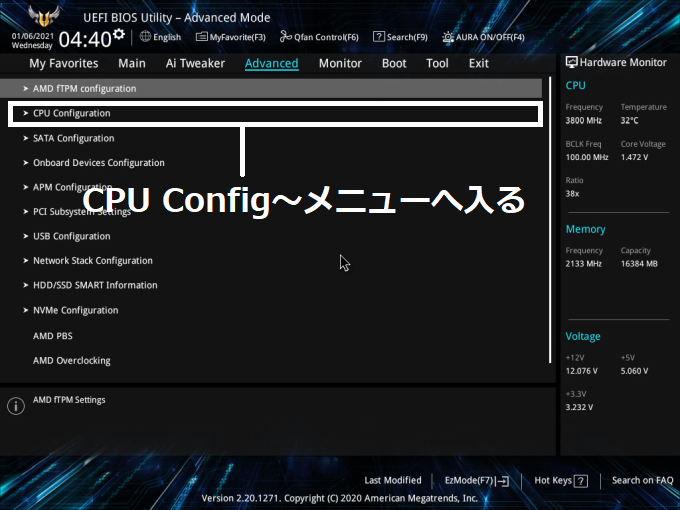
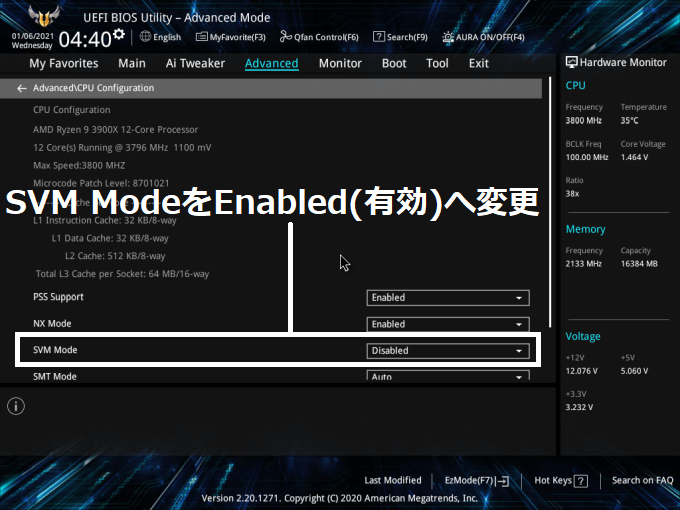
6.起動設定
最上段の Boot を選択し、上から二番目の CSM～(互換サポートモジュール) メニューに入ります。
Launch CSMを選択すると、選択肢が表示されるので、Disabled(無効)にします。
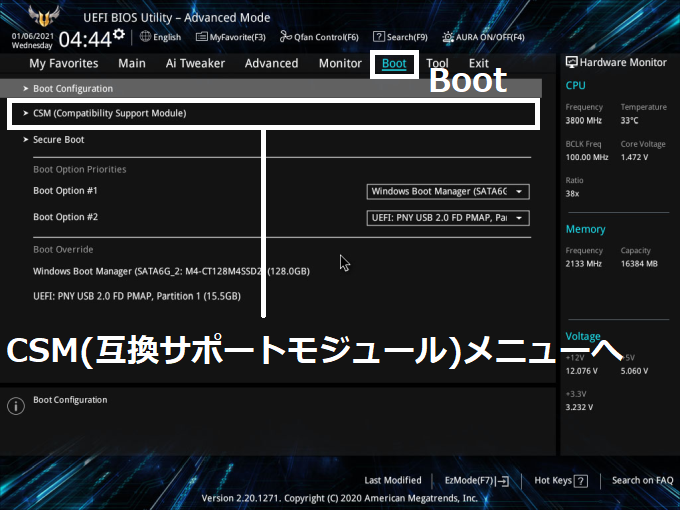 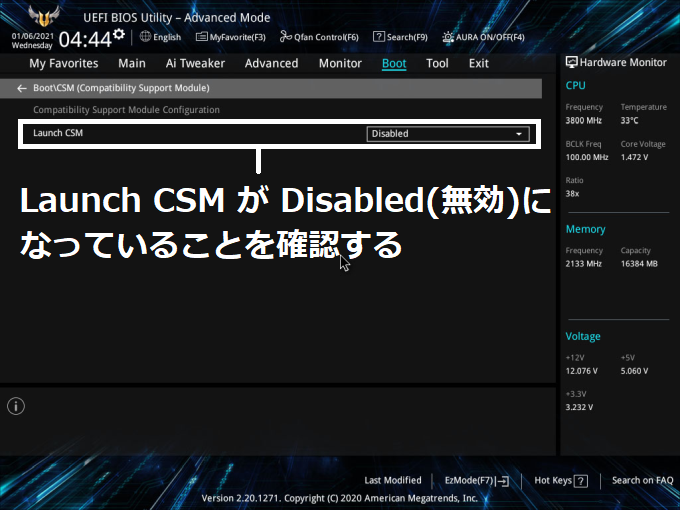
7.セキュアブートの有効化
メニュー上段の ←を選択し 前画面へ、上から三番目の SecureBoot メニューに入ります。
OS Type を選択すると、選択肢が表示されるので、Windows UEFI Mode に変更します。
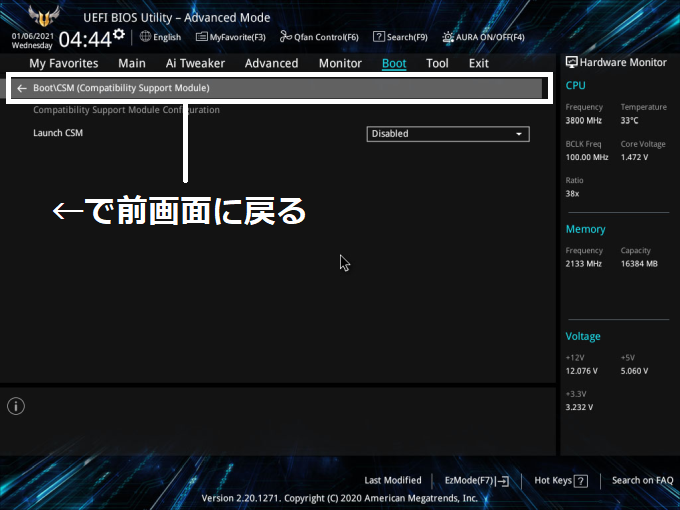 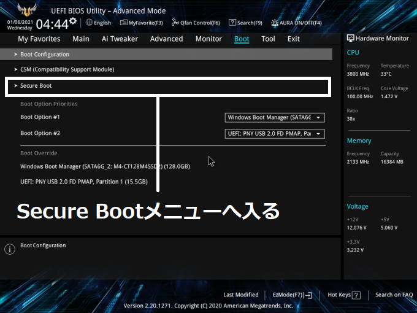
8.設定の保存
最上段の Exit を選択、上から二番目の Save Change & Reset(保存して再起動)を選択すると
設定を保存し再起動します。設定を保存せずに終了するには Discard Change & Exit にします。
9.動作確認
Windowsが起動したら、Valorantでエラーが出ないか確認します。
エラーが引き続き出る場合は、ファームウエアの更新が必要になる場合があります。
4.ファームウェアの設定
メニューの言語が日本語の場合もありますが、大体英語のカタカナ表記になっています。
※キーボードのカーソルキー(矢印)とEnterキー(決定)、ESCキー(戻る)でも操作できます。
※機種により表記や色が異なる事があります。
Advanced(詳細モード) を選択し、Advanced からCPU Config～メニューに入ります。
メニュー 一番下の AMD fTPM を選択すると、選択肢が表示されるので
AMD CPU fTPM に変更します。その項目が無い場合は Enabled(有効)にします。
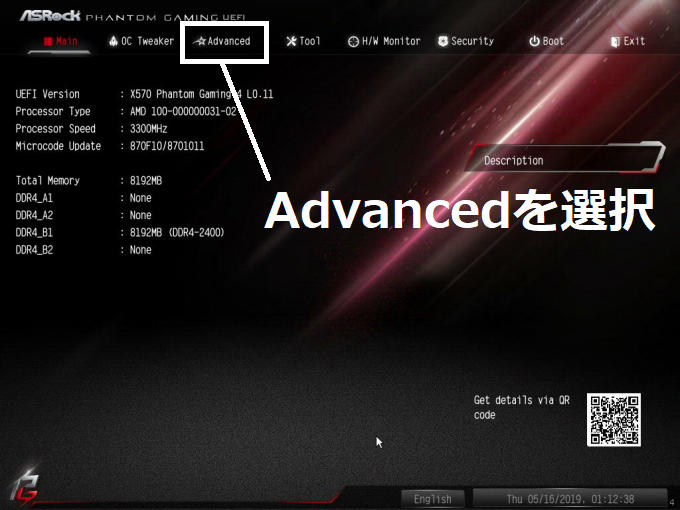 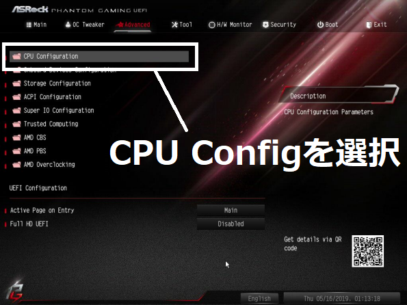

5.起動設定
最上段の Boot を選択し、一番下のCSM～(互換サポートモジュール) メニューに入ります。
メニュー 一番上のCSMを選択すると、選択肢が表示されるので、Disabled(無効)にします。


6.セキュアブートモードの設定
最上段の Security を選択し、SecureBootメニューに入ります。
Secure Boot の項目をいったんDisabled(無効)にします。
Secure Boot Mode を選択すると、選択肢が表示されるので、Standard(標準) にします。


7.セキュアブートの有効化
Secure Boot の項目を Enabled(有効)にします。

8.設定の保存
最上段の Exit を選択し、一番上の Save Change and Exit を選択すると
設定を保存し再起動します。保存せずに終了するには Discard Change and Exit にします。

9.動作確認
Windowsが起動したら、Valorantでエラーが出ないか確認します。
エラーが引き続き出る場合は、こちらの手順を試してみてください。
4.ファームウェアの設定
項目の場所や表記が機種によってバラバラなうえ、手順が複雑なので難易度が高く
全てのステップを正確に書けてるかは怪しいので、設定変更はおすすめしません。
※ファームウェアの更新をすれば難易度は下がると思われますが、BTOなどでは
Windowsの認証キーがファームウェアに含まれている物が有り、BTOメーカー以外の
ファームウェアを書き込むとキーが消えてOSの認証が外れる場合があるのでご注意ください。
※キーボードのカーソルキー(矢印)とEnterキー(決定)、ESCキー(戻る)でも操作できます。
※機種により表記や色が異なる事があります。
Advanced Mode(詳細モード) を選択し、Tweaker からAdvanced CPU Settings へ進み
SVM Mode を選択すると、選択肢が表示されるので Enabled(有効)にします。
 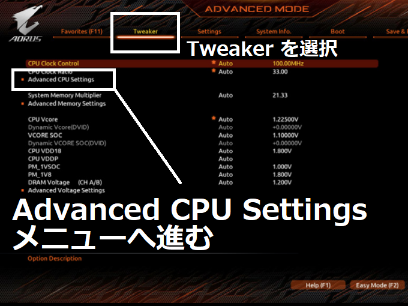
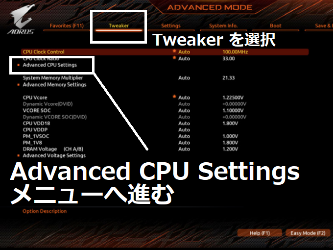
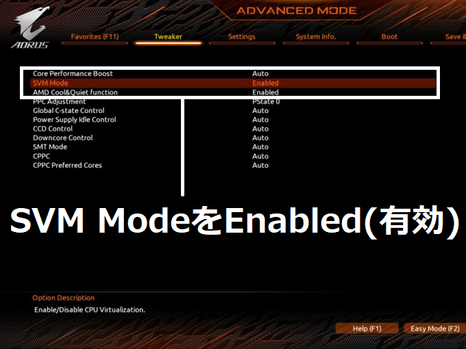
最上段の Settings (Peripherals表記の場合も有り) を選択し、
AMD CPU fTPM を Enabled(有効) にします。
※Settings - Miscellaneousサブメニューの中に有る機種もあります。
5.起動設定
最上段の Boot を選択し、中段のCSM Support(互換サポートモジュール) を選択すると
選択肢が表示されるので、Disabled(無効)にします。
最上段の Save & Exit を選択し、Save & Exit Setup を選択後 YES を押すと再起動
するので、キーボードの DELキー を押し続けて再びファームウェア画面へ戻ります。
※Windowsが起動した場合は、手順1～3でファームウェアメニューへと進んでください。
6.セキュアブートモードの設定
最上段の Boot を選択し、SecureBootメニューに入ります。
Secure Boot Mode の項目をいったん Customにします。
次に RestoreFactory Keys を選択すると、選択肢が出るので YESを選択します。
もう一度選択肢が出るので、YESを選択して再起動します。画面が暗転したら
キーボードのDELキーを押し続けて再びファームウェア画面へ戻ります。
※Windowsが起動した場合は、手順1～3でファームウェアメニューへと進んでください。
7.セキュアブートの有効化
最上段の Boot を選択し、再びSecureBootメニューに入ります。
SecureBootの項目がActiveになっていたら、SecureBootModeをStandardへ戻します。

8.設定の保存
最上段の Save & Exit を選択し、Save & Exit Setup を選択後 YES を押して設定を保存します。
9.動作確認
Windowsが起動したら、Valorantでエラーが出ないか確認します。
手順が複雑すぎて、すべてのステップを正確に書けているかは正直あやしいです。
解決しない場合は以下の手順を試してみてください。
How to Enable Secure Boot on AORUS Motherboard (Youtube)
GIGABYTE X570 UD マザーボード例 (公式twitter)
【GIGABYTEマザーボード全般】Secure Boot の設定方法について(代理店)
セキュアブートはどうやって有効にすればいいのでしょうか？ (B550 AORUS ELITE V2)
X570 Aorus Elite Wifi Mobo, secure boot problem/tpm2.0 (アメリカ語)
X570 Elite Mobo, secure boot problem (アメリカ語)
4.ファームウェアの設定
メニューの言語が日本語の場合もありますが、大体英語のカタカナ表記になっています。
※キーボードのカーソルキー(矢印)とEnterキー(決定)、ESCキー(戻る)でも操作できます。
※機種により表記や色が異なる事があります。
画面上部の Advanced(詳細モード) を選択します。画面左のSETTINGS から
Security メニューに入り、Trusted Computing の項目に進みます。
Security Device Support を選択すると、選択肢が出るので Enable(有効)にします。
その下の AMD fTPM Switch が AMD CPU fTPM になっている事を確認します。

5.起動設定
画面左のSETTINGS から、メニュー 上側の Advanced(拡張項目) メニューに入ります。
中央下の Windows OS Config～ へ進み、BIOS UEFI/CSM Mode を UEFI にします。


6.セキュアブートの有効化
一番下の SecureBoot メニューに入ります。
Secure Boot Mode を選択、選択肢が表示されるので Standard にします。
Secure Boot の項目を選択、選択肢が表示されるので Enabled(有効)にします。
エラーが表示された場合は、Enroll All Factory Default Keys をロードしてみてください。

7.仮想化機能の設定
画面左の OC から、メニュー 一番下の CPU Features または Advanced CPU Config～を
開き、SVM Mode を選択します。選択肢が出るので Enabled(有効)にします。
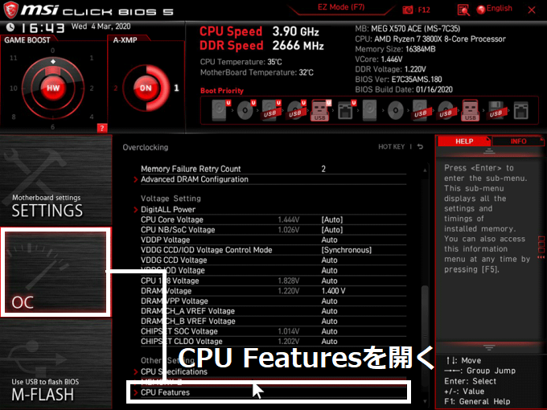
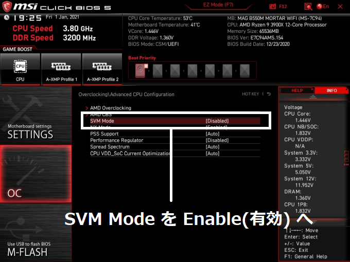
8.設定の保存
画面左のSETTINGS から、メニュー 一番下の Save & Exit(保存と終了) メニューに入ります。
Save Changes and Reboot(保存して再起動)を選択して設定を保存します。
設定を保存せずに終了するには Discard Changes and Exit にします。
9.動作確認
Windowsが起動したら、Valorantでエラーが出ないか確認します。
エラーが引き続き出る場合は、手順 6.のエラーが表示された場合を試してみてください。
また下記の記事を参照してみてください。
VALORANT TPM2.0エラー VAN9001の対処方法｜MSIマザーボード編